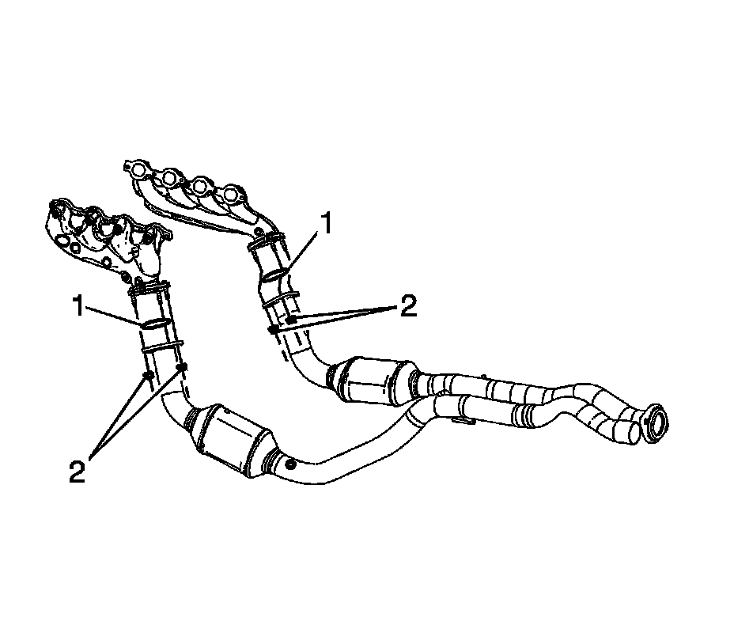

Exhaust Seal Replacement (2500 Series)
Exhaust Seal Replacement (2500 Series)
Removal Procedure

1. Raise and support the vehicle. Refer to Lifting and Jacking the Vehicle.
2. Loosen the 2 rear oil pan skid plate bolts, remove the 2 front oil pad skid plate bolts and skid plate, if equipped.
3. Remove the right front connector position assurance (CPA) retainer (5).
4. Disconnect the right front heated oxygen sensor (HO2S) electrical connector from the engine wiring harness electrical connector (1).
5. Remove the right rear CPA retainer (3).
6. Disconnect the engine wiring harness electrical connector (2) from the right rear HO2S electrical connector.
7. Remove the right rear HO2S electrical connector clip from the engine harness clip (4).

8. Remove the left rear CPA retainer (1).
9. Disconnect the left rear HO2S electrical connector from the engine wiring harness electrical connector (3).

10. Remove the left front CPA retainer (2).
11. Disconnect the left front HO2S electrical connector (2) from the engine wiring harness electrical connector (3).
12. Support the catalytic converter assemblies with suitable adjustable jacks.
13. Remove the exhaust pipe hanger bracket bolts.

14. Remove the catalytic converter to exhaust manifold nuts (2).
15. Separate the catalytic converter assemblies from the exhaust manifolds.
16. Lower the catalytic converter assemblies using the adjustable jacks.
17. Remove the exhaust seal(s) (1) as required.
Installation Procedure
1. Install the NEW exhaust seal(s) (1) as required.
2. Raise the catalytic converter assemblies into place using the adjustable jacks.
3. Install the catalytic converter assemblies to the exhaust manifolds.
Notice: Refer to Fastener Notice.
4. Install the catalytic converter to exhaust manifold nuts (2).
Tighten the nuts to 50 N.m (37 lb ft).
5. Position the exhaust pipe hanger bracket to the transmission.
6. Install the exhaust pipe hanger bracket bolts.
Tighten the bolts to 25 N.m (18 lb ft).
7. Remove the supports from the catalytic converter assemblies.
8. Connect the left front HO2S electrical connector (2) to the engine wiring harness electrical connector (3).
9. Install the left front CPA retainer (2).
10. Connect the left rear HO2S electrical connector to the engine wiring harness electrical connector (3).
11. Install the left rear CPA retainer (1).
12. Install the right rear HO2S electrical connector clip to the engine harness clip (4).
13. Connect the engine wiring harness electrical connector (2) to the right rear HO2S electrical connector.
14. Install the right rear CPA retainer (3).
15. Connect the right front HO2S electrical connector to the engine wiring harness electrical connector (1).
16. Install the right front CPA retainer (5).
17. Position the oil pan skid plate and tighten until snug the 2 rear oil pan skid plate bolts, install the 2 front oil pan skid plate bolts, if equipped.
Tighten the bolts to 28 N.m (21 lb ft).
18. Lower the vehicle.